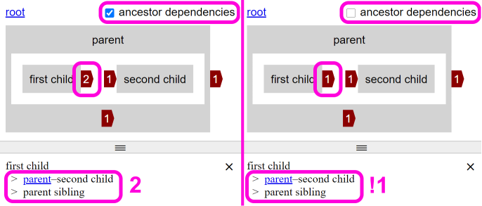
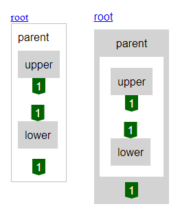
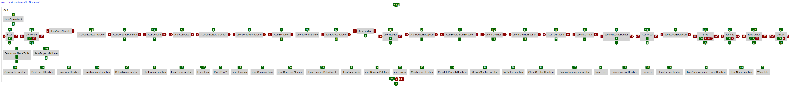

Rust and a recently introduced bug
2020-09-07

Work on what will eventually be a multi-language analyzer is progressing in Rust. I think I've got my head round most of the common ownership scenarios I'll use in Rust e.g. first-class function arguments, iterators.
I've been thinking that there are at least two categories of module analysis that will need supporting. The first is for languages that either wholly or mainly base their module system on file-system paths. The second is for languages that use namespaces and that don't use file-system paths. From my use of Rust so far, it fits into the first category, so this is what I'm implementing first.
Unfortunately, I've taken a short break from working on the new analyzer. My suspicions in recent posts about issue #155 being incomplete turned out to be more significant than I thought. Although the counts appear to be behaving correctly, I'd completely forgotten to implement the changes for the dependency list (see post image). I've created issue #164 to add this missing behavior as a top priority bug. Its likely to be very confusing, especially to new users, the opposite of the original enhancement's intent.
multi-language analyzer
2020-09-02
As mentioned in my previous post I've started work on a new analyzer that has its level of detail limited to module/file/namespace, but will support multiple languages.
As this analyzer will support multiple languages it needs to work across different development environments. To make it easy to use, the runtime its based on would need to be included with the tool. Its possible to bundle the runtimes of many languages with software; however, there is a lot of variation in the size of the runtimes.
The Rust language compiles to native, doesn't have a garbage collector and so has a relatively small runtime. It has support for the major operating systems, memory safety and includes some functional programming features.
At the moment I'm getting familiar with the language by writing the command line interface. I hope to move onto analysis soon, most likely first by dogfooding my own Rust code and then building up some tests.
more languages
2020-08-26
Issue #155, that has been mentioned in the last few posts, is complete and hopefully makes the dependencies in stacks of child items less confusing. I have a feeling it could probably be improved, both in the way its described and some potential complimentary enhancements.
A variation on the recent theme of increasing the likelihood that people will try out Eunice, I would like to make some form of analysis available to most developers. I think the most interesting and helpful way of understanding what Eunice is about is to run it on code people are already familiar with. One barrier to this is that developers use many different languages.
Currently Eunice has full support for JavaScript and C#. JavaScript analysis builds quite a lot onto a syntactic model (from Babel), whereas C# analysis does less as it uses a semantic model (from Roslyn). My plan is to add module/file/namespace analysis for all the popular languages, before adding comprehensive analysis of individual languages.
I've re-ordered the issue backlog to represent this. The order isn't just based on popularity of the languages, but that I'm going to try implementing/dogfooding it in Rust and how quickly I think each language will take. I've also mixed in a quick JavaScript enhancement to break things up.
progress making Eunice easier for new users
2020-08-20

Two of the issues I posted about on 16th are complete (#150 and #154) . I haven't started on the third more nuanced one (#155) as a user created a new issue that would definitely make it easier for people trying to understand what Eunice is visualizing.
This new issue (#156) has been completed, a before and after is shown in this posts image. I'm used to seeing Eunice visualizations and without feedback I might never have realized this was a problem.
latest fixes & enhancements
2020-08-16
As I'm looking to encourage more people to try out Eunice, I thought I'd look at some fixes and enhancements that would make this easier.
There's a couple of issues related to selecting dependencies to be listed (#150 and #154) that shouldn't take long to sort out. The first will remove links that will raise an error and the second adds links that would work but weren't available.
The other issue (#155), might be a bit more nuanced, relates to outer dependency counts (the ones outside the items box). The current behavior works well for software with unidirectional dependencies, but not on software were Eunice is most needed and likely to be the situation of people first using Eunice. Outer dependency counts currently include the stack being viewed, but also all the ancestor stacks, that won't be displayed. This current behavior means users focused on improving a single stack will be distracted by counts that can't be improved by modifying that single stack.
All three issues will be available for both analyzers (C# and JavaScript).
first C# open source project analysed
2020-08-13

Now that Eunice's C# analyzer is working, I thought I'd try it out on one of the most ubiquitous open source .NET packages, Newtonsoft Json.NET.
As you might have noticed from the screenshot Eunice isn't able to infer stack levels for a lot of the classes and namespaces. It has them in quite a long interdependent level. I've counted and there's almost the same amount in the lowest level of uni-directional, dependency-less items.